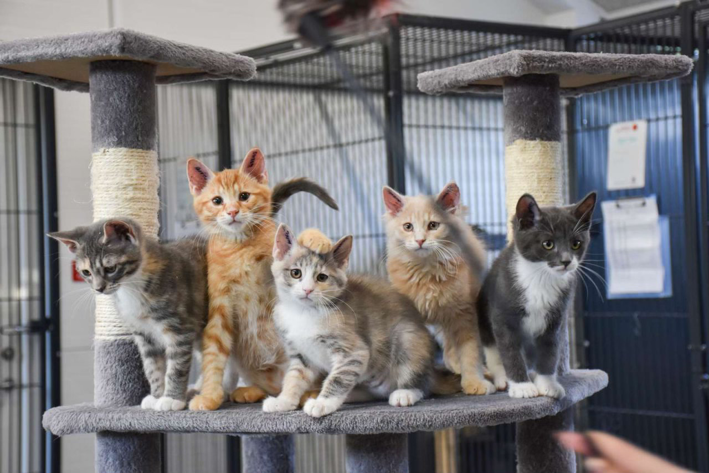
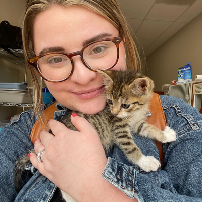
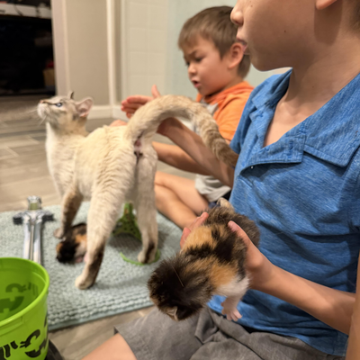
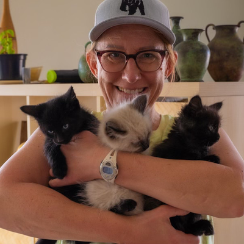

What
Care for kittens until they are ready for a home
You give motherless kittens or a mother cat with kittens care, calm and safety until the kittens are 12 weeks old.

Roskilde Internat · Foster program
Every year, motherless kittens and cat families arrive at our shelter needing calm and safety. Open your home for a few weeks and give them the best start in life.
Apply to foster →Fostering in short
What
You give motherless kittens or a mother cat with kittens care, calm and safety until the kittens are 12 weeks old.
When
Bottle-fed kittens stay 9–12 weeks, motherless kittens 2–8 weeks. For a cat family it depends on the kittens’ age when they arrive.
How
For bottle-fed and motherless kittens, the shelter provides food, heating pads, blankets and cat litter. Milk replacement is also provided for bottle-fed kittens. All foster types receive training.
Who
You need time, your own car and to live approximately 30 minutes’ drive from the shelter for revaccination visits or sudden illness.
How it works
From your first application to the day your kittens are ready for their forever home.
Send your application and choose a foster type.
We call you and book an intro meeting.
Learn the basics and pick up food, heating pads and blankets.
Your foster kittens come home with you.
Feeding, socialising and vet visits, with our support.
At 12 weeks, the kittens are ready to find their new homes.
Stories

“The first nights with bottle-fed kittens were tough, but seeing all four of them grow strong made every alarm clock worth it.”
EmmaBottle-fed kittens · Roskilde

“Our kids helped socialise the kittens with the vacuum cleaner, visitors and a lot of play. Saying goodbye was hard, but we’re already on our second litter.”
The Hansen familyMotherless kittens · Himmelev

“Giving a mother cat and her kittens a quiet room of their own was simple, and the cat team was always just a phone call away.”
SofieCat with kittens · Viby Sjælland
FAQ
Can’t find your answer? Call us on 81 88 03 12, every day 10:00–16:00 (closed 12:00–13:00).
No. Many of our foster families are new to it. We give you thorough training before the kittens move in, and our cat team is there to support you along the way.
For bottle-fed and motherless kittens, the shelter provides food, heating pads, blankets and cat litter. Milk replacement is also provided for bottle-fed kittens. Discuss the supplies for a mother cat with kittens with the cat team.
For bottle-fed and motherless kittens, other animals are allowed if they are vaccinated and non-aggressive towards other animals. For a mother cat with kittens, there must be no other animals in the home, and the cat family must have a separate room where they can rest quietly.
You need your own car for trips to the veterinary clinic for revaccination or sudden illness. The shelter asks foster families to live a reasonable distance away, approximately 30 minutes’ drive.
Depending on the kittens’ age and needs, a foster period lasts from a few weeks to around three months.
At 12 weeks, the kittens are ready to find their new homes.
Become a foster family
It takes about 5 minutes. Our cat team will contact you as soon as possible.
Answer 10 questions to prepare for a conversation with the cat team. Requirements differ by foster type; this quiz does not approve or reject applicants.